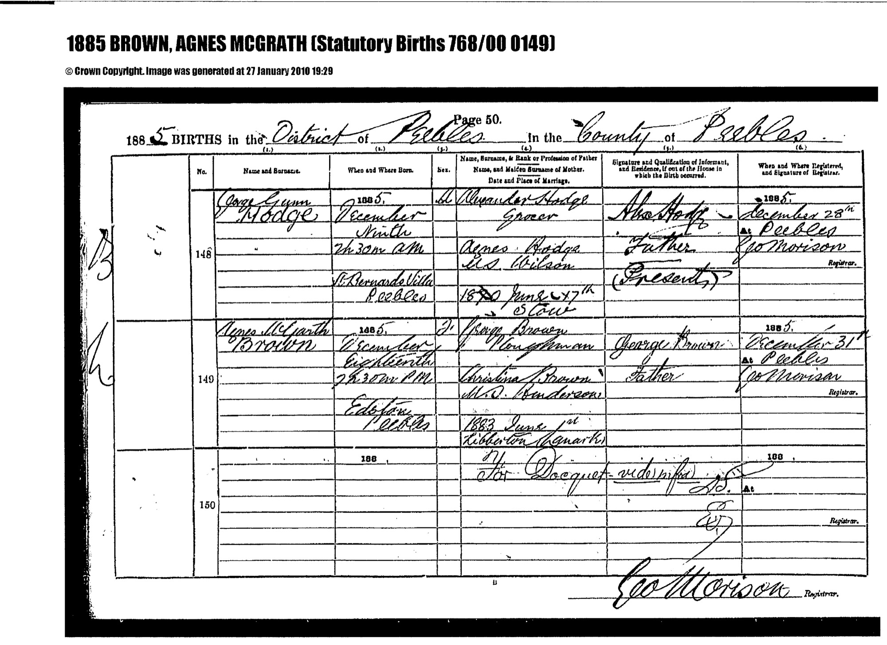

Item 2 · December 18, 1885
Birth registration: Agnes McGarth Brown
The document

Tap an image to open it full size.
Transcription, word for word
Everything as written, including misspellings. [?] marks an uncertain reading. Struck-through words are marked as struck through. Notes in square brackets describe the page and are not part of it.
[Printed header] 1885 BROWN, AGNES MCGRATH (Statutory Births 768/00 0149) [Printed] © Crown Copyright. Image was generated at 27 January 2010 19:29 Page 50. 188[5] BIRTHS in the [District] of [Peebles] in the [County] of [Peebles]. [Column headings, printed] No. | Name and Surname. | When and Where Born. | Sex. | Name, Surname, & Rank or Profession of Father. Name, and Maiden Surname of Mother. Date and Place of Marriage. | Signature and Qualification of Informant, and Residence, if out of the House in which the Birth occurred. | When and Where Registered, and Signature of Registrar. No. 148 Name: George Gunn Hodge Born: 1885. December Ninth 2h 30m AM. St Bernards Villa Peebles Sex: M Father/Mother: Alexander Hodge Grocer. Agnes Hodge M.S. Wilson. 18[8 written over another figure]0 June 17th Stow Informant: Alex Hodge Father (Present) Registered: 1885. December 28th At Peebles Geo Morison Registrar. No. 149 Name: Agnes McGarth Brown Born: 1885. December Eighteenth 2h 30m PM. Edston Peebles Sex: F Father/Mother: George Brown Ploughman. Christina Brown M.S. Henderson. 1883 June 1st Libberton Lanark Informant: George Brown Father Registered: 1885. December 31st At Peebles Geo Morison Registrar. No. 150 [Blank entry, struck through] N/ For Docquet vide infra [initials, illegible] [Signature] Geo Morison Registrar. [Left margin: large handwritten letters, B and h, partly cut off by the edge of the image]